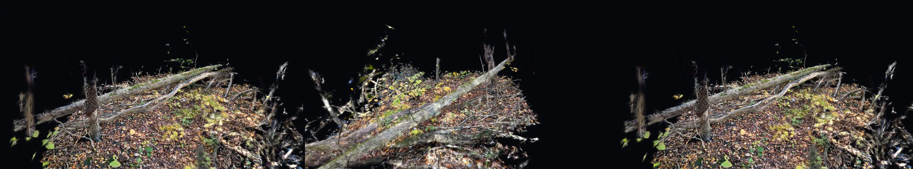
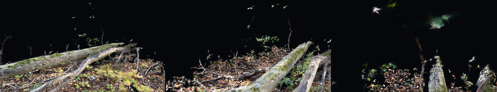
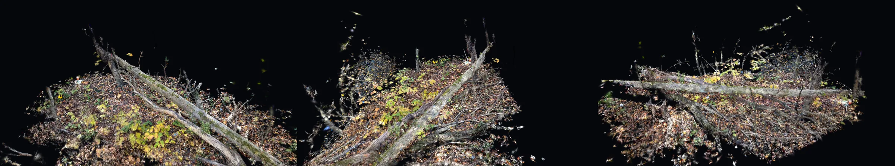
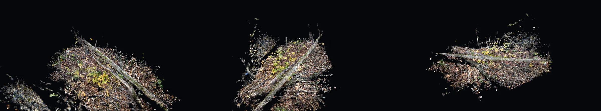
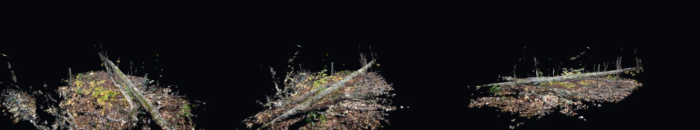
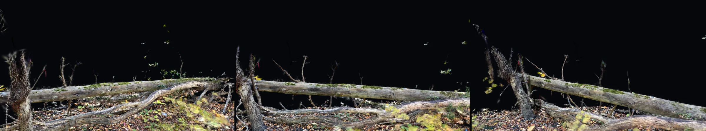
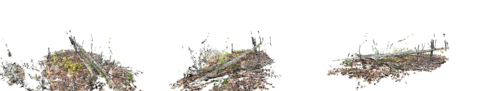
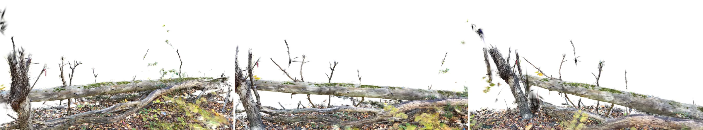

Alewife Brook Conservation Area · fallen log · Gaussian splat
Orbit tests of the Gaussian splat around the fallen log, rendered with the gsplat rasterizer at 3840 x 2160, 24 fps, on the near-black ground. The 360 and the high orbits run past the sides the iPhone capture covered, so thin edges and loose blobs show there. Web copies are 1920 px.
Reel v02, ink Wide reveal, high orbit B, eye level, low close, walk-through, high orbit A, 360; 0.5 s dissolves, 2 s hold · 108 s
Ink shots
360 orbit r 4 m · 2.4 m above ground · about 22 deg down · full turn at constant speed, loops · 24 mm · 20 s

Walk-through The opening walk of the iPhone capture path along the log, smoothed, 3.3 m · 1.4 m eye height · 28 mm · 25 s

High orbit A r 4.5 m · 3.5 m above ground · about 31 deg down · arc 100 to 240 deg · 28 mm · 14 s

High orbit B r 5.5 m · 5.0 m above ground · about 38 deg down · arc 100 to 240 deg · 24 mm · 14 s

Wide reveal, ink r 6 m · 2.6 to 2.0 m above ground · arc 122 to 218 deg · 24 mm · 14 s

Eye level, ink r 3.5 to 3.0 m · 1.65 m above ground · arc 5 to 85 deg · 35 mm · 12 s

Earlier tests
Orbit tests of the Gaussian splat around the fallen log, rendered with the gsplat rasterizer at 3840 x 2160, 24 fps. Arcs stay inside the sides the iPhone capture covered (120 to 220 deg and 330 to 70 deg around the log). Web copies are 1920 px.
Reel v01 Shots 1 to 3 on white, 0.5 s dissolves, 2 s hold on the last frame · 37 s
1 · Wide reveal r 6 m · 2.6 to 2.0 m above ground · arc 122 to 218 deg · 24 mm · 14 s

2 · Eye level r 3.5 to 3.0 m · 1.65 m above ground · arc 5 to 85 deg · 35 mm · 12 s

2 · Eye level, ink Same camera, near-black ground
3 · Low close r 1.8 m around the root end · 0.9 to 1.5 m above ground · arc 85 deg · 28 mm · 10 s